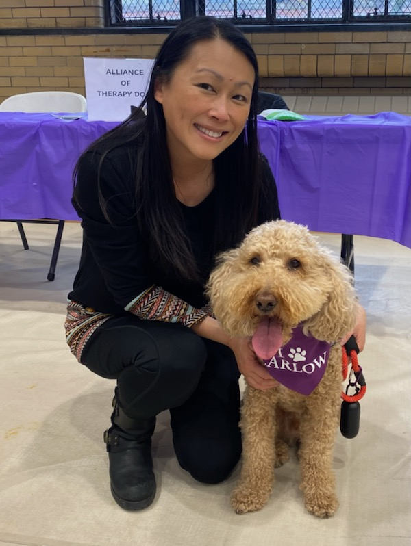

I am a Hong Kong-born Canadian curently living in Pittsburgh, PA with my husband and our 7-year-old mini labradoodle named Mochi. I am a Professor of Psychology at Carlow University as well as the Director of the Undergraduate Psychology Program and the Interim Associate Dean of Faculty Professional Development for the College of Arts and Sciences. I currently teach classes in social psychology and statistics. A few years ago I also earned a certificate in American Sign Language and I now co-organize a monthly local ASL meetup.
Mochi and I are a certified pet therapy team with the Alliance of Therapy Dogs. Here we are volunteering at a wellness event at Carlow:
I have been a singer all my life, but in the past few years I became involved in musical theatre and I think I have finally found my niche! I have played Lisa in Mamma Mia, a Gaston Girl in Beauty and the Beast, and Doody in Grease (my favorite role so far). Currently, I am preparing to audition for The Addams Family.